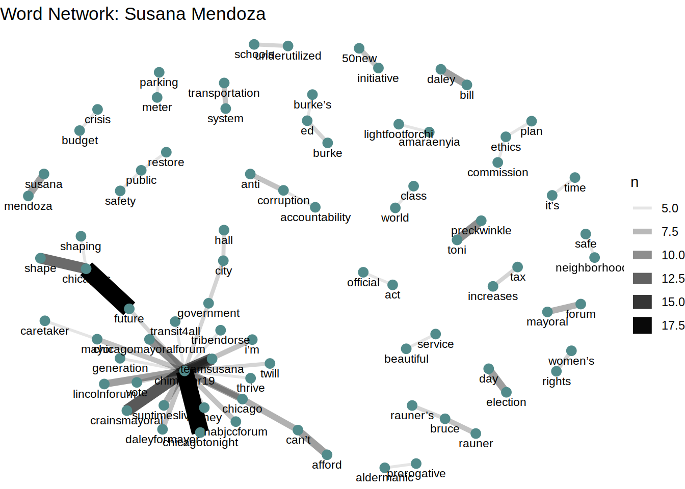
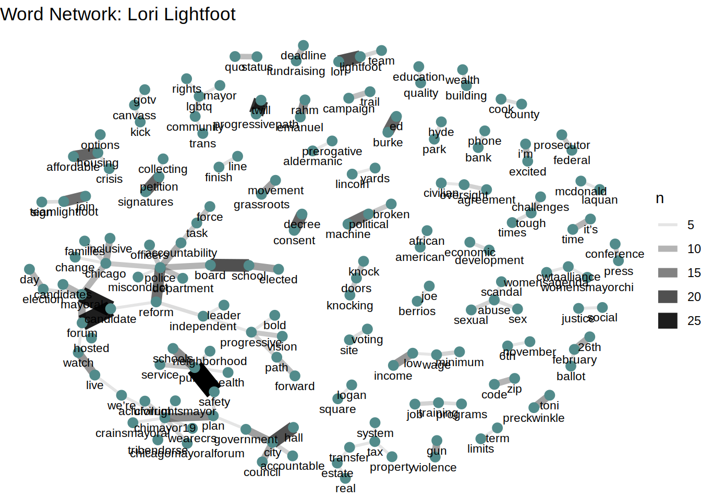

Chapter 3 Word Networks
As you might imagine, candidates often repeat certain words and phrases in order to emphasize various ideas. If they repeat them enough, those words can start to represent a campaign theme the candidate wishes to express to potential voters. In this chapter, we will examine the Twitter messages from each candidate over the campaign period to find and graph co-occurring words. We can, then, ascertain from those connections ideas and themes candidates wish to express.
3.1 Process and Code
Here is a (somewhat) quick rundown of the process, including examples of the code used:
First, we will take the dataset of each candidate, filter out retweets, then take the text portion of each record and get rid of ampersands, “less than” and “greater than” characters, and embedded url’s. The remaining words will then be paired off in the order in which they occur. The pairs will then be filtered to remove those that contain “stop words” that are not relevant terms for us (e.g. the, an, in, etc.) and extended unicode characters that aren’t words we can use.
candidate_big_filtered <- function(candidate_f){
candidate_big <- candidate_f %>% filter(!is_retweet) %>% select(text) %>% mutate(text = str_remove_all(text,remove_reg)) %>% mutate(text = rm_twitter_url(text)) %>% unnest_tokens(bigram, text, token = 'ngrams',n=2)
big_separated <- candidate_big %>% separate(bigram,c('word1','word2'),sep=' ')
big_filtered <- big_separated %>% filter(!word1 %in% stop_words$word) %>% filter(!word1 %in% my_stopwords$word) %>% filter(!word2 %in% stop_words$word) %>% filter(!word2 %in% my_stopwords$word)
return(big_filtered)
}Next, the pairs are counted up and a count for each pair is returned
candidate_big_counts <- function(candidate_big_filtered){
big_counts <- candidate_big_filtered %>% count(word1,word2,sort=T)
return(big_counts)
}The pairs, along with a count of their co-occurrence, is then filtered, only keeping pairs with co-occurrences of five or more. A graph is then constructed, using nodes to represent each word and lines (edges) to represent the number of co-occurrences. The thicker the line, the more frequent co-occurrences. Simple, right? You will notice that many of the networks can be characterized by a large group of connected terms referring to a person’s actual candidacy with other groups of connected terms reflecting common themes in their messages.
candidate_network <- function(candidate_big_counts){
word_network <- candidate_big_counts %>% filter(n >= 5) %>% graph_from_data_frame() %>% ggraph(layout='fr')+geom_edge_link(aes(edge_alpha=n,edge_width=n))+geom_node_point(color='darkslategray4',size=3)+geom_node_text(aes(label=name),vjust=1.8,size=3)+theme_void()
return(word_network)
}3.1.1 Bob Fioretti
The highest co-occurring terms refer to the mayoral forum and structural change. Also notable in his network are mentions of an elected school board, the issue of property taxes, and a reference to the current Mayor, Rahm Emanuel. Other individuals mentioned include competitors Gery Chico, Toni Preckwinkle, and Ed Burke.
3.1.2 Susana Mendoza
Most prominent in Susana Mendoza’s network is the idea of shaping Chicago’s Future. Also of note is the use of “twill” hashtag, short for “Twitter Illinois”.

3.1.3 John Kozlar
John Kozlar’s graph is extremely sparse, only mentioning corrupt politicians in addition to the mayoral forum.
3.1.4 Neal Sales-Griffin
Sales-Griffin’s network is also sparse and mostly mentions terms related to his podcast. In fact, The only notable idea related to the campaign in his network is collecting signatures.

3.1.5 Amaya Enyia
Amaya Enyia has a number of different references in her word network. Among the most interesting are references the Community Renewal Society (wearecrs) and possibly Chance the Rapper (chanceforchange).
3.1.6 Willie Wilson
Where to begin with Willie Wilson? There are a number of references to local media outlets, as well as to facebook and instagram. Issues referred to in his word network include bail reform, economic equality, and red light cameras.
3.1.7 Jerry Joyce
Jerry Joyce’s word network is relatively sparse, with mentions of neighborhood schools and public safety.
3.1.8 La Shawn K Ford
Most of the word network of La Shawn K Ford refers to candidate himself.
3.1.9 Bill Daley
Bill Daley’s word network heavily refers to gun violence, public safety, crime, and property taxes.
3.1.10 Lori Lightfoot
The word network of Lori Lightfoot presents her as one of stye more progressive candidates in the race. It refers to government accountability, the consent decree, the Laquan McDonald issue, as well as social justice, and affordable housing. It is also one of the few networks that refers to the LGBTQ community.

3.1.11 Garry McCarthy
Garry McCarthy’s word network refers to a number of subjects, among them neighborhood schools and gun violence. The network is notable for a number of references to the current Mayor, Rahm Emanuel.
3.1.12 Gery Chico
Gery Chico’s network is oddly sparse, referring mainly to his candidacy. In addition, references to public safety and his wife are also made.
3.1.13 Toni Preckwinkle
Toni Preckwinkle’s word network is notable for its references to unions (SEIU,CTU). It also frames her as progressive, referring to affordable housing and the LGBTQ community. The subject of the school board is also mentioned.
3.1.14 Paul Vallas
A significant portion of Paul Vallas’ word network refers to economic development and public schools. Public safety and violence prevention are also mentioned.